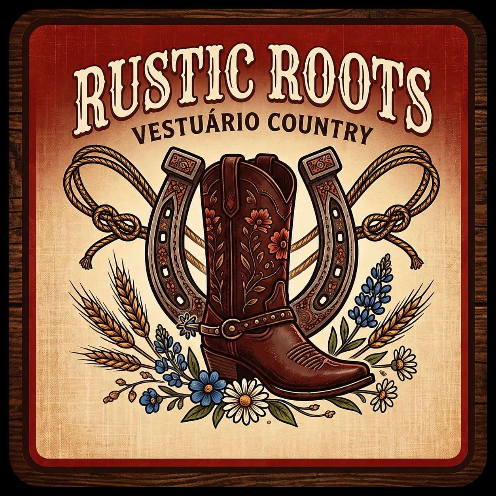

Meu primeiro post
Por: Ingridy Ferreira
Boas-vindas ao meu novo site! Aqui vou compartilhar dicas de roupas country.
Nossos Destaques de Estilo
- 🤠 Chapéus Oficiais
- 🥾 Botas de Couro
- ➿ Cintos e Fivelas
Vou compartilhar conhecimentos e dicas de roupas country

Por: Ingridy Ferreira
Boas-vindas ao meu novo site! Aqui vou compartilhar dicas de roupas country.